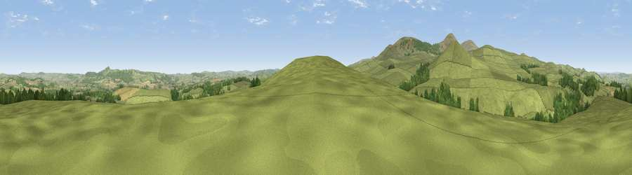

Viewpoint near Ilderton
#11971 in England · top 43% of its area beats it · near IldertonThe view, rendered

A 360° render of this exact spot computed from the terrain model, tree cover and land cover — summer colours, afternoon light, calibrated against photographs of famous viewpoints. Real trees, hedges and buildings will differ in detail.
The panorama
Grey silhouette: terrain skyline in each direction (720 bearings, Earth curvature and refraction included). Dashed green: skyline with trees (+15 m) and buildings (+8 m) as obstacles. Blue strip: how far the ground is visible on each bearing.
Where the view opens
Wedge length = distance to the farthest visible ground on that bearing (vegetation-aware). Rings at 10, 25 and 50 km.
What fills the view
80% grassland · 12% woodland · 8% cropland
Angular shares of the visible panorama (visual magnitude), not map area. Landscape diversity 0.28 (0–1 Shannon).
Key numbers
More beautiful places nearby
The staircase of upgrades: each row has a higher view potential than everything closer. Driving times are estimates from straight-line distance, calibrated against real road routing — check an actual route before setting out.
| Place | Direction | Drive | Score |
|---|---|---|---|
| Viewpoint near Ilderton | S · 0 km | ~1 min | 64.2 |
| Viewpoint near Ilderton | S · 1 km | ~3 min | 66.3 |
| Viewpoint near Ilderton | W · 3 km | ~7 min | 79.2 |
| Viewpoint near Ingram | SW · 4 km | ~9 min | 80.5 |
| Viewpoint near Ingram | SW · 4 km | ~10 min | 82.0 |
| Viewpoint c12396_7887 | WSW · 6 km | ~13 min | 85.7 |
| Viewpoint near Chillingham | ENE · 9 km | ~17 min | 88.1 |
| Ullock Pike | SW · 119 km | ~144 min | 89.4 |
55.48438, -1.99483 · source: screening · position refined by local search. Computed location — check access rights before visiting.